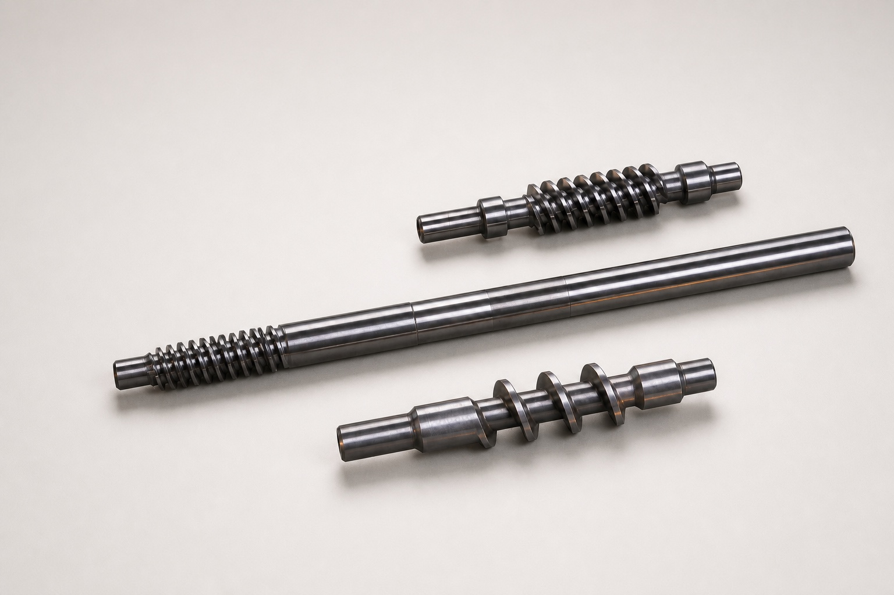
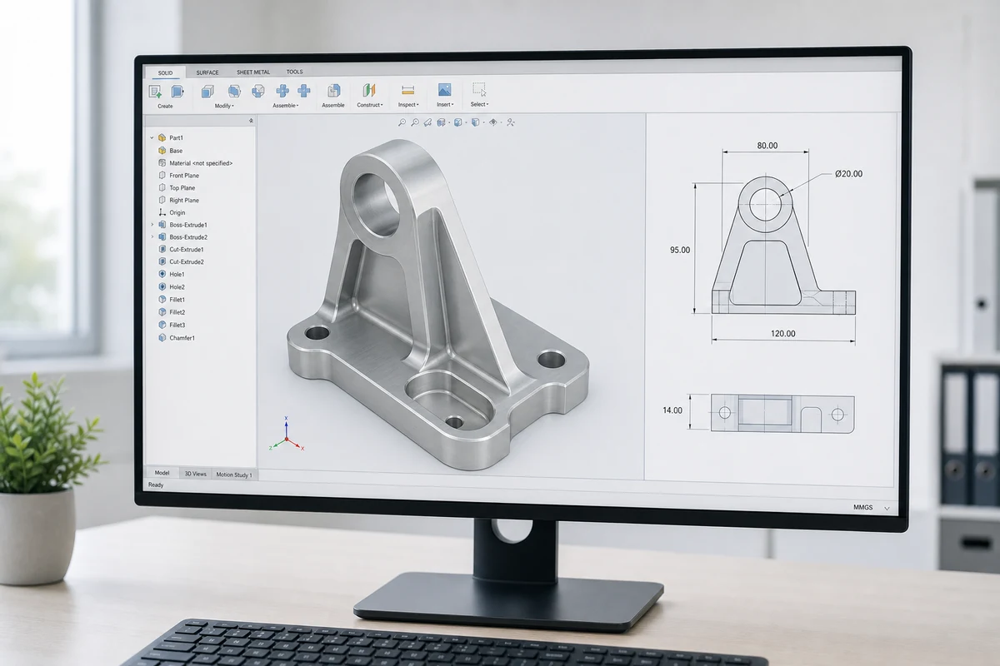

Manufacturing Capabilities
From prototype to production.
Flexible manufacturing solutions across metals and plastics, backed by clear engineering support and dependable supplier management.

Precision Worm Shafts
High-volume worm shafts, splined shafts, motor shafts, and custom turned components.
View Capability →
CNC Machining
Precision machined components for prototypes, low-volume builds, and production runs.
Discuss a Project →
Sheet Metal Fabrication
Custom enclosures, brackets, panels, and assemblies produced through cutting and forming.
Discuss a Project →
Plastic Injection Molding
Tooling and molded plastic parts for validation, bridge production, and scalable programs.
Discuss a Project →
3D Printing
Fast additive manufacturing for concept models, functional prototypes, and fixtures.
Discuss a Project →Start a Project
Not sure which process fits?
Send us your drawings, specifications, or a physical sample. We will review the requirements and recommend a practical manufacturing path.